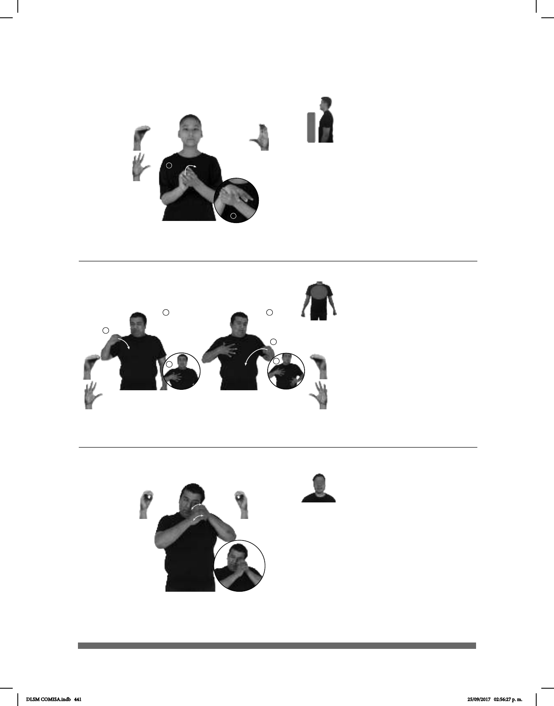

441
Seña: SB
MD y MB O.1
MD palma hacia la izquierda.
MB palma hacia la derecha.
Sobre el ojo izquierdo. MD debajo
de MB.
Movimiento: Las manos se mueven de atrás
Cabeza ladeada hacia la
izquierda, ojo izquierdo semicerrado.
Simula la acción de observar
a través de dicho objeto.
sust. m. Instrumento óptico que
permite ver objetos muy pequeños, incluso
algunos no perceptibles a simple vista.
MICROSCOPIO CL: GARRA
sobre el tablero
ESE COSA ANTIGUO
El microscopio que está sobre el tablero es un instrumento antiguo.
(O-42) Microscopio
Seña: SB
MD y MB seña que pasa
de O.5 a 5.2
MD y MB palmas hacia
adentro.
MD sobre el pecho, MB sobre
el estómago.
Movimiento: Los dedos se extienden
alternamente.
Lengua hacia
afuera.
sust. f. Porción de
alguna cosa, como una gota de líquido, un
fragmento de comida, etc. que ensucia o
echa a perder una cosa por ser de
apariencia o color distinto del que domina
en ella.
AYER MANTEL MOLE MANCHA
sobre el mantel
El mantel se manchó de mole ayer.
(O-41) Mancha
1
2
(O-40)
–
Seña: SB
MD que pasa de O.5 a
5.2, MB C.3
MD palma hacia afuera.
MB palma oblicua hacia adentro.
MD y MB a la altura del
pecho.
Movimiento: MD golpea la MB y se
mueve formando un arco hacia el frente
por encima de ésta.
1. v. tr. Entrar a formar
parte de una organización o institución. 2.
sust. m. Entrada o inicio de actividades de
alguien en una organización o institución.
pos-MI PRIMO UNIVERSIDAD YA INGRESAR
Mi primo ingresó a la universidad.
DLSM COMISA.indb 441 25/09/2017 02:56:27 p. m.